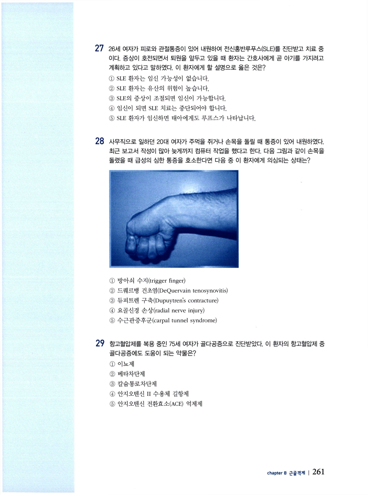

근골격계 문제
전문간호사 자격시험 대비 문제집 — 근골격계 (CHAPTER 8).
문 01 고관절 관절염 진단검사
75세 여자의 오른쪽 고관절에 관절염이 의심될 때 예상되는 진단검사 결과는?
- 골밀도가 증가되어 있음
- 척주의 추간판이 파열됨
- 오른쪽 고관절의 관절강이 좁아져 있음
- 대퇴골두(femoral head)에 압박골절이 보임
- 오른쪽 고관절의 골두에 석회화가 보임
문 02 콜히친 부작용
급성 통풍을 진단받은 75세 남자에게 콜히친(colchicine) 정맥투여를 한 후 관찰해야 하는 부작용은?
- 설사
- 실신
- 고열
- 심정지
- 골수억제
문 03 구획증후군
75세 남자가 대퇴골 골절로 입원하여 골절정복 수술을 하고 오른쪽 다리에 전체 석고붕대를 적용하고 있다. 수술 후 6시간이 경과하였을 때 통증조절을 위해 모르핀이 정맥투여되고 있음에도 석고붕대를 한 다리에 통증이 여전히 심하고 발이 바늘로 찌르는 듯 따끔거린다고 호소한다. 오른쪽 족배동맥의 맥박이 촉지되지 않으며 발톱의 모세혈관 재충전검사에서 지연된 충전반응을 보이고 발에 부종이 있다. 이 환자에게 의심되는 상태는?
- 구획증후군
- 말초혈관염
- 수술부위 감염
- 급성 폐색전증
- 급성 심부정맥 혈전증
문 04 류마티스 관절염 진단기준
손목관절의 통증을 호소하여 내원한 45세 여자에게 류마티스 관절염(rheumatoid arthritis; RA)이 의심되었다. 다음 건강력 문진내용 중 RA 진단기준에 해당하는 내용은?
- 반점이 최근 심해졌어요.
- 다리를 구부릴 때마다 소리가 납니다.
- 양쪽 관절에 통증이 두 달 이상 지속됩니다.
- 오후가 되면 관절이 뻣뻣하고 움직이기 힘들어요.
- 지난주부터 팔목 관절에 증상이 시작되었어요.
문 05 고관절 전치환술 후 금기자세
75세 여자가 고관절 전치환술(total hip replacement; THR)을 받고 퇴원하였다. THR 부위가 이탈되는 위험이 있어 피해야 할 자세는?
- 복위
- 앙와위
- 고관절 굴곡
- 무릎의 신전
- 고관절의 외회전
문 06 근력 사정(2점)
근골격계 신체검진으로 근력을 사정하고 있다. 손상된 손의 근력이 2점이었다면 어떤 상태인가?
- 일상 활동을 하기에 충분함
- 근육의 수축이 전혀 느껴지지 않음
- 중력에 거슬러 손을 들어 올릴 수 있음
- 근육이 약간 수축하는 것이 느껴지나 움직임이 거의 없음
- 몸 가까이 손을 끌어당길 수 있으나 들어 올릴 수 없음
문 07 골관절염 초기 중재
72세 여자가 6개월 전부터 손가락 말단 지골간 관절이 붓고 통증이 심해져서 내원하여 골관절염을 진단받았다. 미국 류마티스학회에서 권장하는 골관절염 환자의 초기 중재는?
- 운동과 체중감소
- 조기 관절 치환술
- 고용량 스테로이드
- 비스테로이드성 항염제(NSAIDs)
- 철저한 진단검사가 완료된 후 치료시작
문 08 류마티스 관절염 통증조절
다음 중 류마티스 관절염 환자의 통증을 지속적으로 조절하기 위해 가장 효과적인 중재는?
- 냉찜질
- 규칙적 운동
- 고용량 스테로이드
- 심부 열패드 적용
- 경피적 전기신경자극(TENS)
문 09 급성 요통 신경학적 장애
급성 요통을 호소하는 환자의 건강사정 결과 신경학적 장애가 의심되는 내용은?
- 방광 기능장애를 보임
- 심각한 외상 병력이 있음
- 앙와위에서 통증이 있음
- 하지의 반사, 근력, 감각이 저하됨
- 양쪽 발목에 대칭적인 부종이 관찰됨
문 10 팔렌검사 / 수근관증후군
56세 여자가 손등을 90도로 맞대고 60초를 버티게 하는 팔렌검사(Phalen test) 시 통증을 호소하였다면 이 환자에게 의심되는 상태는?
- ulnar tunnel syndrome
- carpal tunnel syndrome
- tarsal tunnel syndrome
- radial tunnel syndrome
- myofascial pain syndrome
문 11 발목 염좌 초기 48시간
발목 염좌로 인한 손상이 있는 환자에게 첫 48시간 동안 제공되어야 할 중재는?
- 저항성 발목 운동
- 휴식과 발목 상승
- 발목의 저강도 스트레칭
- 열과 냉찜질 교환요법
- 방사선 촬영 후 정형외과 의뢰
문 12 대퇴골 스트레스 골절 초기 중재
대퇴골에 스트레스 골절이 나타난 환자에게 제공되는 초기 중재는?
- 일상활동을 지속하도록 한다.
- 수술을 통해 골절정복을 한다.
- 활동을 한 후에는 얼음찜질을 한다.
- 매일 수동적인 관절범위운동을 시행한다.
- 뼈에 추가적인 부담을 주지 않기 위해 휴식한다.
문 13 전신홍반루푸스 진단검사(ANA)
다음 중 양성이 나올 때 전신홍반루푸스(systemic lupus erythematosus)의 진단기준에 포함되는 검사는?
- HLA-B27
- rheumatoid factor (RF)
- anti-nuclear antibody (ANA)
- Erythrocyte sedimentation rate (ESR)
- High sensitivity C-reactive protein (HS-CRP)
문 14 급성 통풍 치료에 부적절한 약물
Hydrochlorothiazide를 복용하고 있는 고혈압 환자에게 엄지발가락의 극심한 통증이 발생하여 통풍으로 진단받았다. 다음 중 급성 통풍을 치료하기 위해 적절하지 않은 약물은?
- Allopurinol
- Prednisone
- Colchicine
- Indomethacin
- Naproxen
문 15 요통 영상진단 시점
2주 전 뒷마당에서 나무를 심다가 발생한 요통을 호소하여 50세 남자가 내원하였다. 허리의 통증은 오른쪽 다리로 가끔 방사되며 통증이 있으면 ibuprofen을 먹었다고 한다. 특별히 건강상 문제는 없으며 건강한 편이었다. 이 환자의 통증이 어느 정도 지속된 후 영상진단검사가 요구되는가?
- 통증 발생 2주 후
- 통증 발생 4주 후
- 통증 발생 6주 후
- 통증 발생 8주 후
- 영상진단검사가 요구되지 않음
문 16 골다공증 골밀도검사 대상자
다음 골다공증의 위험군으로 판단되어 골밀도검사 스크리닝이 요구되는 대상자는?
- 몸집이 작고 과체중인 30대 여자
- 주 1회 음주하는 40세 아시아 여자
- 골절된 적이 없는 55세 폐경 후 여자
- 비교적 건강한 편인 65세 남자
- 류마티스 관절염이 있는 60세 남자
문 17 요추좌상 활동 교육
40세 남자가 무거운 책상을 들다가 발생한 요통이 있어 내원하여 요추좌상(lumbar strain)으로 진단받았다. 걷기만 해도 요통이 심해진다고 하여 일상활동을 하기가 두렵다고 호소하는 환자에게 할 수 있는 설명으로 옳은 것은?
- 침상안정을 하시면 요통이 완화됩니다.
- 일상활동은 하시더라도 걷는 것은 피하세요.
- 앞으로 3일간 모든 일상활동을 중지하세요.
- 일상활동을 하다가 통증이 나타나면 침상안정합니다.
- 일상활동과 함께 걷기를 견딜 수 있는 만큼 조금씩 늘려가세요.
문 18 족저근막염 중재
평소 건강하던 45세 남자가 등산을 다녀온 후 왼쪽 발 뒤꿈치에 심한 통증이 있어 내원하였다. 아침에 일어나서 발을 디딜 때 극심한 통증을 느낀다고 하며 외상 병력은 없다고 한다. 이 환자에게 적절한 중재는?
- 항생제
- 휴식과 얼음찜질
- 고용량 스테로이드 정맥투여
- 5km/hr 속도로 매일 1시간 걷기
- 비스테로이드성 항염제(NSAIDs) 장기복용
문 19 골관절염 1차 치료약물
골관절염이 있는 65세 환자가 비약물적 치료중재를 받은 후에도 통증이 지속되고 있다. 미국 류마티스학회에서 권장하는 통증완화를 위한 1차 치료약물은?
- Naproxen
- Steroid
- Ibuprofen
- Tramadol
- Acetaminophen
문 20 골관절염 통증 미완화 중재
75세 여자가 오른쪽 무릎에 경증의 골관절염을 진단받았다. 비교적 건강한 편으로 다른 만성질환은 없으며, 무릎 통증으로 acetaminophen 2000 mg을 매일 투약하고 있는데 통증이 완화되지 않는다고 한다. 이 환자에게 적절한 중재는?
- NSAIDs로 처방을 변경한다.
- acetaminophen을 하루 4000 mg으로 증량한다.
- acetaminophen 현재 용량을 유지하면서 물리치료를 병행한다.
- acetaminophen 현재 용량을 유지하면서 수술여부를 고려한다.
- 48시간 침상안정을 한 후 일상활동에서 통증유발 활동을 피하도록 한다.
문 21 어깨 외상 초기 중재
50세 남자가 사다리를 타고 작업을 하다 떨어져 벽에 오른쪽 어깨를 부딪친 후 심한 통증이 있어 내원하였다. 통증 강도는 10점 척도에서 7점 정도라고 하며, 통증이 어깨로부터 팔까지 방사된다고 한다. 초기 중재로 적절한 것은?
- 진통제를 정맥투여 한다.
- 물리치료를 받도록 의뢰한다.
- 오른쪽 어깨와 팔에 방사선 촬영을 요청한다.
- 오른쪽 어깨를 3일간 고정하여 움직이지 않도록 한다.
- 휴식을 취하고 얼음찜질과 함께 진통제(naproxen)를 1주일간 처방한다.
문 22 경골 스트레스 골절 설명
장거리 마라톤에 참가했던 60세 남자가 다리통증으로 응급실에 내원하여 경골에 스트레스 골절(tibial stress fracture)을 진단받았다. 앞으로의 치료단계를 묻는 환자에게 적절한 설명은?
- 2주간 휴식 후 치료를 시작합니다.
- 진통제는 회복을 지연시키므로 금합니다.
- 방사선 촬영을 하여 진단을 확인하게 됩니다.
- 휴식과 함께 다양한 대체운동이 처방됩니다.
- 일상생활을 하면서 목발을 사용하게 됩니다.
문 23 통풍 위험요소
급성 통풍성 관절염을 진단받은 환자가 자신이 왜 질병에 걸렸는지 문의하였다. 다음 중 통풍의 위험요소에 해당하는 것은?
- 비만
- 여자
- 흡연
- 관절의 외상
- 류마티스 관절염
문 24 골관절염 증상
골관절염 환자가 호소하는 증상을 가장 잘 설명한 것은?
- 얼굴의 홍조
- 휴식 시 나타나는 요통
- 피부병변이 동반되는 곤봉형 손가락
- 체중 부하관절에 오후부터 심해지는 통증
- 이른 아침 관절에 대칭적으로 나타나는 뻣뻣함
문 25 골관절염 혈액검사 결과
골관절염이 의심되는 환자의 혈액검사에서 예상되는 결과는?
- 만성적 염증상태
- C반응 단백(CRP) 수준 상승
- 검사결과 특이사항 없음
- antinuclear antibody(ANA) titer 상승
- Rheumatoid factor 상승
문 26 류마티스 관절염 사망원인
류마티스 관절염 환자의 대표적인 사망원인은?
- 감염
- 심근경색
- 종양
- 신부전
- 패혈증
문 27 SLE와 임신
26세 여자가 피로와 관절통증이 있어 내원하여 전신홍반루푸스(SLE)를 진단받고 치료 중이다. 증상이 호전되면서 퇴원을 앞두고 있을 때 환자는 간호사에게 곧 아기를 가지려고 계획하고 있다고 말하였다. 이 환자에게 할 설명으로 옳은 것은?
- SLE 환자는 임신 가능성이 없습니다.
- SLE 환자는 유산의 위험이 높습니다.
- SLE의 증상이 조절되면 임신이 가능합니다.
- 임신이 되면 SLE 치료는 중단되어야 합니다.
- SLE 환자가 임신하면 태아에게도 루프스가 나타납니다.
문 28 드퀘르뱅 건초염(그림)
사무직으로 일하던 20대 여자가 주먹을 쥐거나 손목을 돌릴 때 통증이 있어 내원하였다. 최근 보고서 작성이 많아 늦게까지 컴퓨터 작업을 했다고 한다. 다음 그림과 같이 손목을 돌릴 때 급성의 심한 통증을 호소한다면 다음 중 이 환자에게 의심되는 상태는?
- 방아쇠 수지(trigger finger)
- 드퀘르뱅 건초염(DeQuervain tenosynovitis)
- 뒤퓌트렌 구축(Dupuytren's contracture)
- 요골신경 손상(radial nerve injury)
- 수근관증후군(carpal tunnel syndrome)

문 29 골다공증에 도움되는 항고혈압제
항고혈압제를 복용 중인 75세 여자가 골다공증으로 진단받았다. 이 환자의 항고혈압제 중 골다공증에도 도움이 되는 약물은?
- 이뇨제
- 베타차단제
- 칼슘통로차단제
- 안지오텐신 II 수용체 길항제
- 안지오텐신 전환효소(ACE) 억제제
문 30 임신부 진통제 선택
현재 임신 3개월인 30세 여자가 아들과 놀이동산에 다녀온 후 오른쪽 무릎에 통증이 심해 밤에 잠을 잘 수 없어 내원하였다. 진통효과를 위해 임신부가 선택할 수 있는 약물은?
- Prednisone (Sterapred)
- Acetaminophen (Tylenol)
- Naproxen sodium (Aleve)
- Baby aspirin (Bayer)
- 저용량 Ibuprofen (Advil)
문 31 무릎 Grade II 염좌 초기 중재
50세 남자가 아침에 조깅을 하다가 발을 헛디뎌 무릎이 뒤틀린 후 통증이 심해져 내원하였다. 무릎이 심하게 부어 있고 만지면 통증을 호소한다. Grade II 염좌로 진단받았을 때 환자에게 설명하는 적절한 초기 중재는?
- 손상된 무릎에 방수드레싱을 부착한 후 온수 샤워를 한다.
- 첫 24시간동안 냉찜질을 하다가 이후 온찜질을 지속한다.
- 2시간마다 침상밖으로 나와 목발로 지지하여 가볍게 걷게 한다.
- 24시간 후 무릎의 관절범위 운동을 다시 확인하여 등척성 운동을 시작한다.
- 지금부터 48시간 동안 냉찜질을 간헐적으로 적용하고 손상된 다리를 상승시킨다.
문 32 NSAIDs 위장장애 기전
류마티스 관절염을 진단받고 장기간 비스테로이드성 항염제(NSAIDs)를 복용하던 70세 여자가 위장장애가 있어 내원하였다. 관절염 약을 복용하는데 왜 위장장애가 생기냐고 묻는 환자에게 할 설명으로 옳은 것은?
- 약물이 직접 위 점막을 자극하므로
- 프로스타글란딘 합성을 강화시키므로
- 약물의 효과로 위장관 운동이 감소하므로
- 위장관 점막을 보호하는 물질의 합성을 억제하므로
- 류마티스 관절염 진통효과를 위해 고용량이 처방되므로
문 33 NSAIDs 위병변 고위험 환자
다음 중 비스테로이드성 항염제(NSAIDs)에 의한 위병변이 발생할 위험이 가장 높은 환자는?
- 오랜 기간 하루에 4번씩 아스피린을 복용하는 72세 관절염 환자
- 현재 흡연하고 있으며 월경통이 심하여 매달 월경 기간에 naproxen을 6번 복용하는 40세 여자
- 요통이 있으면 ketoprofen을 주당 1~2회 복용하는 43세 확장성 심근병증 환자
- 발목염좌로 지난주 ibuprofen을 복용하였고 주말에는 4~6캔의 맥주를 마신 28세 남자
- 계절이 바뀔 때마다 편두통이 나타나면 아스피린을 최대용량으로 복용하는 18세 여자
문 34 섬유근육통 추가교육 필요
섬유근육통을 진단받은 환자에게 퇴원교육을 하였다. 환자가 말한 내용 중 추가교육이 필요하다고 생각되는 경우는?
- 커피는 한잔으로 줄여보겠습니다.
- 짜고 기름진 음식은 피하고 건강식으로 먹으려고요.
- 생활하면서 스트레스를 받지 않으려고 노력할게요.
- 유연성 강화를 위해 스트레칭 프로그램에 참가할 거예요.
- 통증관리를 위해 매일 아침 조깅을 시작하려고 합니다.
문 35 골관절염 주 치료목표
골관절염의 주 치료목표는?
- 관절기능을 보존한다.
- 연골의 파괴를 예방한다.
- 연골의 생성을 촉진시킨다.
- 일상활동을 최대수준으로 향상시킨다.
- 통증 없이 매일 뛸 수 있게 한다.
문 36 급성 통풍발작 주요 요인
통풍 환자에게 급성 통풍발작을 초래하는 주요 요인은?
- 활동과다
- 고도 비만
- 고요산혈증
- 알코올 과다섭취
- 퓨린 함유 음식의 과다섭취
문 37 통풍에 이뇨제 금기 이유
통풍 환자에게 이뇨제 처방을 금하는 이유는?
- 급성 통풍발작을 초래하므로
- 혈장 용량을 변화시키기 때문에
- 전해질 불균형이 초래되므로
- 사구체여과율을 감소시키므로
- 신장에서 요산이 배설되는 것을 감소시키므로
문 38 DVT 위험이 가장 낮은 경우
다음 중 심부정맥 혈전증(DVT)의 발생 위험이 가장 낮은 경우는?
- 무릎 전치환술을 받은 70세 여자
- 담낭절제술을 받은 건강한 35세 여자
- 복부동맥류 수술을 받은 60세 남자
- 고관절 전치환술을 받은 건강한 80세 여자
- 관상동맥조영술을 받은 비만인 50세 남자
문 39 류마티스 관절염 중증도 설명
류마티스 관절염을 진단받은 35세 여자가 자신의 엄마도 이 질환으로 고생하는 것을 보았다며 어느 정도 심각한 질병인지 물었다. 이에 대한 설명으로 옳은 것은?
- 심각한 질병이 아니고 정상에 가까운 생활을 유지하실 수 있습니다.
- 심각한 전신질환으로 5년 생존율이 4기 호지킨병이나 3혈관 관상동맥질환과 유사합니다.
- 질병의 진행속도가 빠르지 않아 이전에 비해 덜 심각한 단계로 분류하고 있습니다.
- Epstein-Barr 바이러스에 의해 노출되어 발생하는 질환으로 치료가 가능합니다.
- 침범된 국소 부위만 기능소실을 가져오므로 일상활동에 미미한 장애가 예상됩니다.
문 40 여성 운동선수 3징후
정기 신체검진을 하러 고등학교 여자 배구팀이 내원하였다. 이들을 검진하면서 나타난 다음 징후 중 여자 운동선수들에게 신체손상을 초래하는 세 징후(female athlete triad)에 포함되는 것은?
- 높은 불안감
- 낮은 자존감
- 서맥
- 섭식장애
- 족저근막염
문 41 골다공증 교육(약물 거부)
골다공증을 진단받은 62세 여자가 호르몬 대치요법을 포함하여 골밀도를 높이는 어떤 약도 복용하지 않겠다고 거부하였다. 이 환자의 건강관리를 위해 효과적인 교육내용은?
- 관절전치술에 대한 정보
- 매년 골밀도 사정을 해야하는 이유
- 칼슘섭취와 함께 체중부하운동을 하는 효과
- 칼슘배설을 촉진시키는 음식종류
- 호르몬대치요법의 장단점
문 42 혈우병(혈관절증)
생후 8개월의 남아가 양쪽 무릎에 혈관절증(hemarthrosis)과 혈뇨가 있어 내원하였다. 외상 병력은 없으나 부모는 아이가 항상 멍이 잘 들곤 했다고 말하였다. 이 환아에게 의심되는 상태는?
- 가정 폭력
- 백혈병
- 혈우병
- 특발성 혈소판감소증
- 류마티스 관절염
문 43 무릎 전치환술 흔한 합병증
무릎 전치환술을 받고 입원 중인 환자에게 가장 흔히 나타나는 합병증은?
- 욕창
- 패혈증
- 지방색전증
- 신전근 기능장애
- 심부정맥혈전증(DVT)
문 44 욕창 설명
요양원에서 장기간 침상생활을 하는 85세 남자에게 발생한 욕창에 대한 설명으로 옳은 것은?
- 욕창 치료에서는 항생제를 사용할 수 없다.
- 연쇄상 구균이 패혈성 욕창을 발생시키는 주요 균이다.
- 노인의 영양상태를 향상시키면 욕창의 위험이 줄어든다.
- 갑상선 저하증은 노인에게 욕창 발생을 촉진시킨다.
- 둔부에 적용하는 패드는 욕창 발생을 촉진시킨다.
문 45 노인 변비 요인
노인에게 변비를 초래하는 대표적인 요인은?
- 부동
- 불안
- 이뇨제
- 고단백식이
- 다량의 수분섭취
문 46 강직성 척주염 중재
강직성 척주염을 진단받은 환자에게 적절한 중재는?
- 침상안정
- 금염(gold salts)
- 스테로이드 경구투여
- 스테로이드 관절내 주입
- 비스테로이드성 항염제(NSAIDs) 처방
문 47 고관절 THR 후 DVT 근거
오른쪽 고관절 전치환술을 받은 80세 여자가 수술 후 3일째인 오늘 아침 왼쪽 다리의 부종과 통증이 있으며 신체검진 시 Homan 징후가 양성이다. 심부정맥 혈전증(DVT)을 의심하는 근거에 대한 설명으로 옳은 것은?
- 고관절 수술 후 DVT는 주로 80세 이상에서 나타난다.
- 수술 후 항응고제 투여가 금기이므로 DVT 위험이 높아진다.
- 고관절 전치환술 후 50% 이상의 환자에게 DVT가 발생한다.
- DVT 환자의 대부분은 Homan 징후가 양성이다.
- 고관절 전치환술의 경우 압박스타킹이 금기이므로 DVT 발생이 높아진다.
문 48 DVT 가장 심각한 합병증
심부정맥 혈전증(DVT)의 가장 심각한 합병증은?
- 뇌색전
- 폐색전증
- 심근경색
- 말초혈관염
- 말초혈관색전
문 49 지방색전증
교통사고로 내원한 40세 여자가 골반 골절을 진단받고 입원하였다. 입원 2일째 호흡곤란과 고열(39℃)이 있으며 의식의 혼돈을 보인다. 신체검진에서 Homan 징후는 음성이었으며 양쪽 폐 하엽에 수포음이 들리고 흉부 방사선에서 폐 전반적으로 폐포 충만성 병변(alveolar filling pattern)이 보이며 동맥혈가스분석에서 저산소증이 있다. 이 환자에게 가장 의심되는 상태는?
- 폐색전증
- 지방색전증
- 수술후 무기폐
- 흡인 폐렴
- 수술부위 감염
문 50 경추 신경근증 / 추간판탈출 중재
50세 여자가 급성 경추 신경근증과 흉추 5번의 추간판탈출증을 진단받았다. 이 환자에게 가장 효과적인 중재는?
- 경추 견인
- 능동적 저항운동
- 스테로이드 정맥투여
- 수동적 관절범위 운동
- 경추 칼라(cervical collar)
문 51 고관절 외전근 평가검사
다음 중 골반의 안정성을 위한 고관절 외전근의 능력을 평가하기 위한 검사는?
- Phalen's test
- Tinel's sign
- Trendelenburg test
- Kernig's sign
- Homan's sign
문 52 요통 감별진단
심한 요통이 있는 환자의 감별진단으로 고려되어야 하는 것은?
- 간염
- 담석증
- 골수염
- 심근경색
- 소화성 궤양
문 53 대퇴골두 무혈관성 괴사 요인
걸을 때 통증이 있어 절뚝거리게 되어 내원한 40세 남자가 대퇴골두의 무혈관성 괴사를 진단받았다. 무혈관성 괴사를 초래하는 가장 흔한 요인은?
- 외상
- 알코올 중독
- 고지혈증
- 류마티스 관절염
- 스테로이드 복용
문 54 장기 스테로이드 복용자 수술 전 검사
류마티스 관절염으로 장기간 스테로이드를 복용하고 있는 50대 여자가 일반 마취로 담낭절제술을 받기로 예정되어 있을 때 수술 전 시행해야 할 검사는?
- 심전도
- 심초음파
- 흉부 방사선촬영
- 스트레스 검사
- 경추방사선촬영